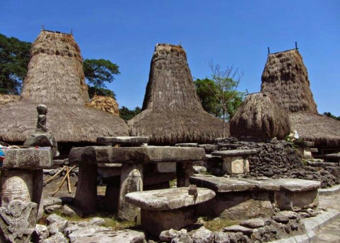

Kampung Adat Tarung
Deskripsi
Kampung Adat Tarung, yang berlokasi tak jauh dari Waikabubak, Sumba Barat, Nusa Tenggara Timur (NTT),
memang punya daya tarik tersendiri. Selain karena merupakan salah satu kampung tertua di Sumba Barat, masyarakat yang tinggal di lahan sepanjang satu kilometer ini
juga masih menjaga adat istiadat para leluhur. Di Kampung Tarung sendiri sedikitnya terdapat 100 rumah menara yang dihuni oleh 400 warga.
Setiap rumah, diisi oleh tiga generasi. Rumah menara sendiri ialah rumah adat khas Sumba Barat yang memiliki filosofi dan fungsi bagi masyarakat
Kampung Tarung. Ada tiga bagian utama rumah adat Sumba. Pertama, bagian atap rumah (toko uma) berbentuk kerucut seperti menara biasa digunakan untuk menyimpan benda-benda pusaka.
Terkadang pula di sana digunakan untuk menyimpan hasil panen. Kedua, ruang hunian (bei uma) yang tidak menyentuh tanah. Pada ruang dalam dibedakan atas ruang akses untuk pria dan wanita.
Ada juga ruang hunian berlantai bambu untuk tempat bermusyawah berupa beranda luas (bangga). Ketiga, bagian bawah rumah (kali kabunga) menjadi kandang ternak, seperti kambing, babi,
atau bahkan kuda dan kerbau.